Présentation du langage SysML
Présentation du langage SysML
Les principaux concepts sur lesquels s'appuie le langage sysML pour modéliser les systèmes sont les suivants :
- Tout type d'élément faisant partie du système modélisé est décrit par un "block". Il est défini essentiellement par son nom, ses caractéristiques et les fonctions qu'il offre.
Exemples :
Le type "Téléviseur".
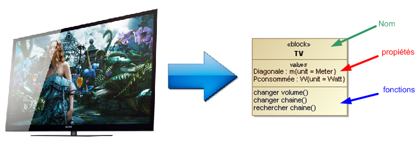
Le type "Roue"
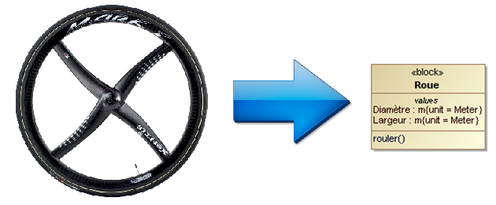
- Un block peut être une spécialisation d'un block plus général. Exemple :
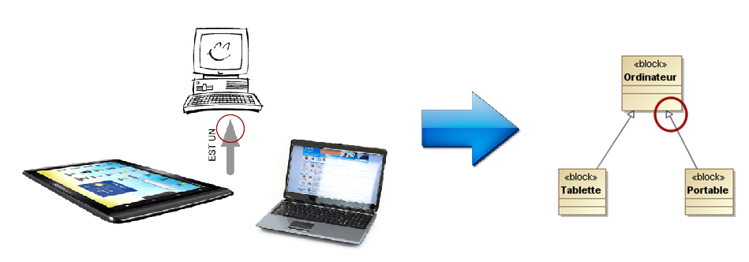
- Un block peut lui même être constitué de blocks (losange noir) et/ou susceptible d'en contenir certain (losange blanc) . Exemple :
Un véhicule (2CV)

est symbolisé ainsi :

- Une "part" représente un block mis en oeuvre dans un contexte donné. Exemple :
Le block "servomoteur" du robot NXT :
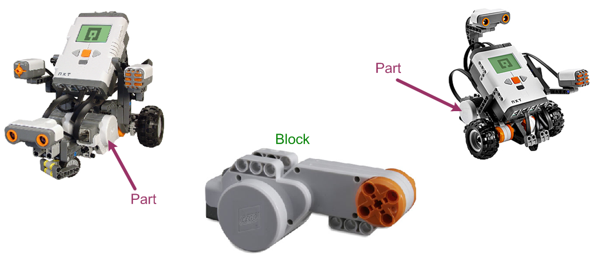
est symbolisé ainsi :
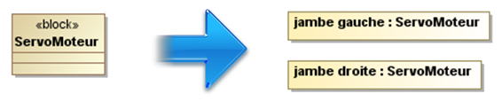
- Les parts sont liés entre eux pour réaliser une structure ou une fonction. Exemple :
La partie droite d'un portail
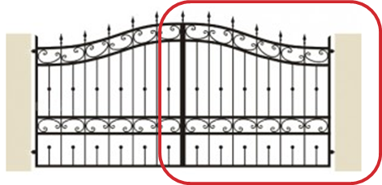
peut se représenter ainsi :
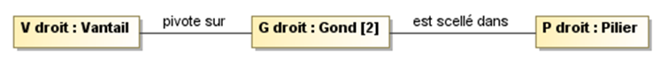
- Les parts interagissent par l'intermédiaire de ports (concept d'entrée/sortie). Exemple :
L'interconnexion des éléments d'une chaîne HI FI
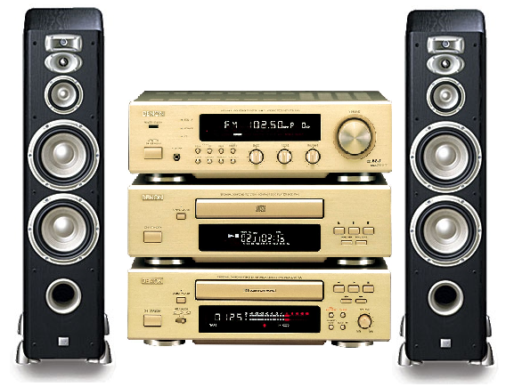
est représentée ainsi :
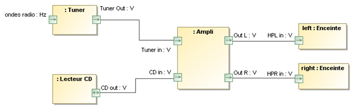
Remarque : Les parts "left" et "right" représentent 2 instances (exemplaires) du block "Enceinte".
- L'état d'un block évolue au fil des événements qui se produisent. Exemple :
L'évolution de l'état d'un feu de croisement
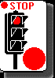 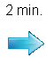 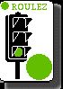
est modélisé ainsi :
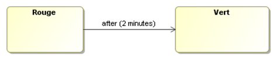
- Les parts communiquent entre eux par l'envoi de message. La réception d'un message provoque le déclenchement d'une activité. Exemple : Dans le scénario suivant, l'ordre "monter" envoyé par la télécommande lors d'un appui sur le bouton poussoir, déclenchant l'enroulement du volet roulant motorisé,

se représente ainsi :
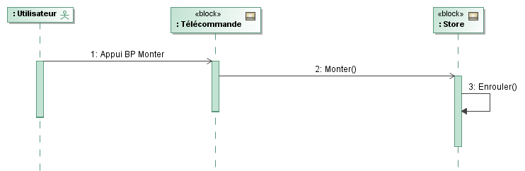
Le langage sysML propose 9 types de diagrammes destinés à représenter les aspects fonctionnel, structurel et comportemental d'un système. Seuls, six sont à connaître en STI2D :
- Pour modéliser l'aspect fonctionnel on a :
- Le diagramme des cas d'utilisation (UCD) - Use Case Diagram ;
- Le diagramme des exigences (RD) - Requirements Diagram.
- Pour représenter l'aspect structurel, on dispose :
- Du diagramme de définition de blocks (BDD) - Block Definition Diagram ;
- Du diagramme de block interne (IBD) - Internal Block Diagram.
- Et pour modéliser l'aspect comportemental, on a :
- Le diagramme de séquence (SD) - Sequence Diagram ;
- Le diagramme d'état (STM) - State Machine Diagram.
Pour information :

Created with the Personal Edition of HelpNDoc: Free Web Help generator